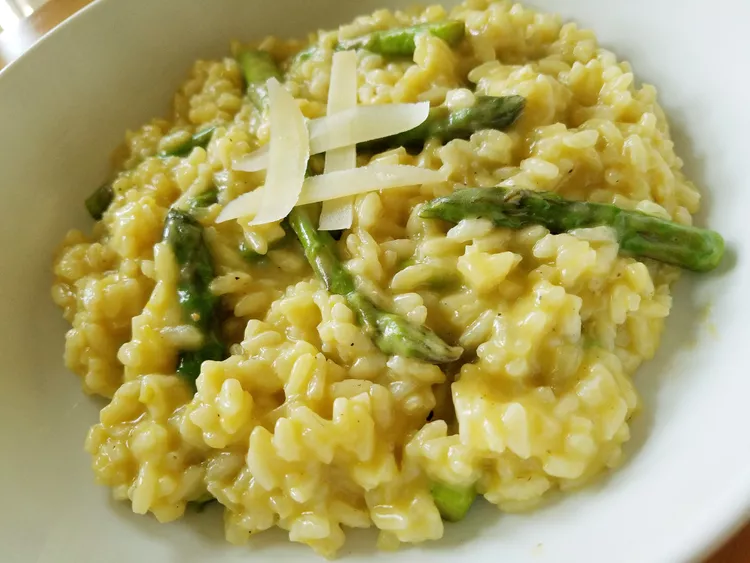

Home
Risotto Recipe

Prep Time: 10 mins
Cook Time: 35 mins
Total Time: 45 mins
Servings: 4
Ingredients
- 20 fresh asparagus spears, trimmed
- 4 cups low-sodium chicken broth
- 2 tablespoons olive oil
- 1 small onion, diced
- 1 rib celery, diced
- ¼ teaspoon salt
- ¼ teaspoon ground black pepper
- 1 cup Arborio rice
- 1 clove garlic, minced
- ½ cup dry white wine
- ¼ cup freshly grated Parmesan cheese
- 2 tablespoons lemon juice
- ½ teaspoon lemon zest
Directions
- Step 1
- Place a steamer insert into a saucepan and fill with water to just below the
bottom of the steamer. Bring water to a boil. Add asparagus, cover, and steam
until tender, about 5 minutes. Cut asparagus into 1-inch pieces; set aside.
- Step 2
- Meanwhile, heat chicken broth in a saucepan over medium heat; keep at a
simmer while preparing risotto.
- Step 3
- Heat olive oil in a large skillet over medium heat. Add onion and celery; cook
and stir until vegetables are tender, about 5 minutes. Season with salt and black
pepper. Stir in Arborio rice and garlic; cook and stir until rice is lightly toasted,
about 5 more minutes.
- Step 4
- Stir in white wine and simmer until it has mostly evaporated, then stir in 1/3 of
the hot chicken broth; continue stirring until rice has absorbed liquid and
turned creamy. Repeat this process twice more, stirring constantly. Stirring in
the broth should take 15 to 20 minutes in all. When finished, rice should be
tender yet firm to the bite. Stir in asparagus.
- Step 5
- Remove from heat and mix in Parmesan cheese, lemon juice, and lemon zest.
Serve immediately.
Nutrition Facts (per serving)
- 357 Calories
- 9g Fat
- 53g Carbs
- 11g Protein